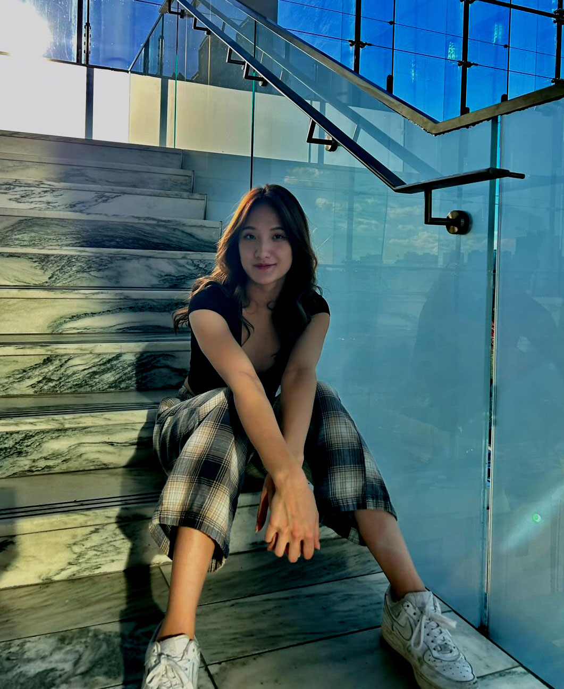

About Me
Annette Huang is a current second year student at University of Toronto Mississauga specializing in Digital Enterprise Management and Visual Cultural Communication. Her passion in graphic design, project management, and UIUX has led her to pursue her studies in DEM. This year, her coursework included Marketing, Information Systems, Law | Technology | Culture, Web Culture & Design, and Media Economics.
During off season, Annette continued to pursue her interest in project management at an real-estate commercial advertising organization, interning and learning about the factors that play into strong marketing. Putting together and organizing reports, she delivered multiple proposals and reports for potential real-estate advertisements in Kaohsiung City, Taiwan.
Outside of her academic life, Annette is the VP Internal (event director) for the Taiwanese Student Association and she hopes to become a mentor for the ICCIT mentorship program. She is also on the Women’s Tri-Campus Volleyball team for the past two years. In the past, Annette has played multiple roles in creative projects. These include being the head director of her high school’s Yearbook team, president of the student council, event director for Red Cross, and playing 3 varsity sports during her final year in high school.
Through her work experiences on and off campus, Annette has continued to develop both her soft and hard skills in multiple areas. This has helped her build on skills such as problem-solving, leadership, detail-orientation, flexibility, and innovation. She is proficient in Adobe InDesign, Photoshop, and Illustrator, familiar with Adobe XD and Lightroom.
Her passion for strong human interaction, digital management, and graphic design has led her to pursue project management in the future.
Capstone Project


A travel documentary style book that collected the food, culture, and history of 5 different cities around Taiwan.
"Aftertaste" dives deep into how food shapes the culture and history of nations, making each location unique to itself.
Yearbook
Collection of a whole year worth's memory through photography. A book students can look back to remember all memories they shared with their friends throughout their lives.
Course Projects